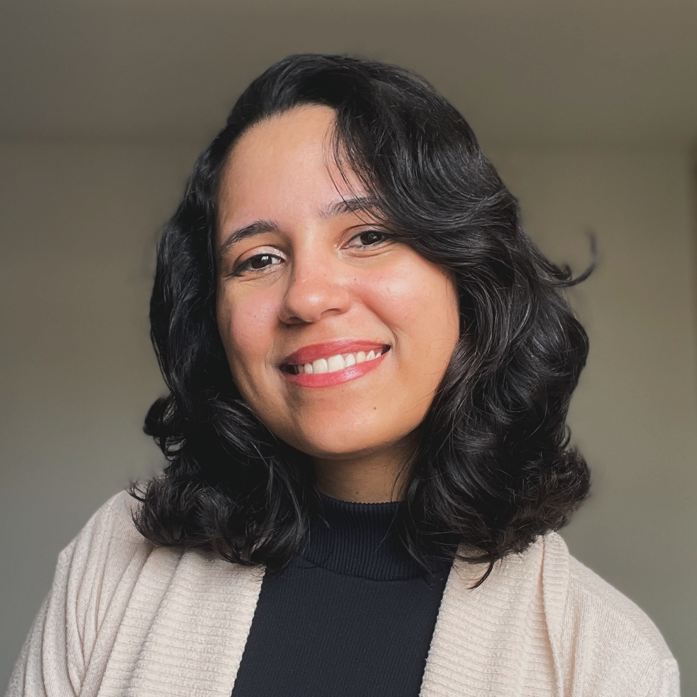

About Maysa

I am a UX Researcher living in Recife, Brazil.
In my work, I emphasize on the development of meaningful products that use technology as a tool. I am skilled in qualitative and quantitative methods, and always value inclusive and human-centred processes while seeking an in-depth understanding of problems, constraints, and opportunities. My research experience includes both industry and academia. I am always nurturing curiosity and adaptability.
My most recent project focus on creating HCI guidelines for researchers, designers and developers that want to explore the use of AI language models to assist individuals with complex communication needs. This analytical and critical work was developed in collaboration with the Virtual Reality and Multimedia Research Group (UFPE, Recife, Brazil) and the Inclusive Design Research Centre (OCAD, Toronto, Canada) as part of my master’s thesis.
Some of my research interests include Human-Computer Interaction, Accessible Computing, Robotics, AI and ML, Ubiquitous Computing, Data Analytics and Visualization, Inclusive Design, and Education.